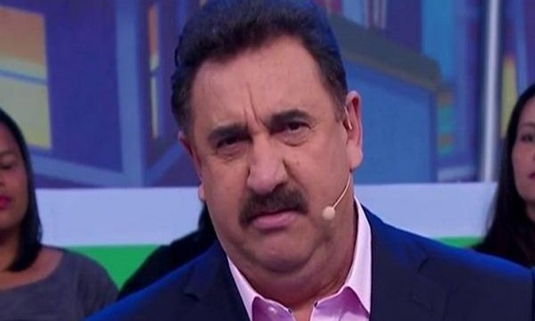

Site
UEPA
Botao 2
Botao 3

Vida e Obra
Carlos Roberto Massa, mais conhecido pela sua alcunha, Ratinho, é um apresentador, empresário e ex-político brasileiro. É também pai do político Ratinho Júnior.
Fontes
Grandes feitos de ratinho
Descobriu o Brasil
Governou o Paraná
Construiu as Cataratas
Estruturou Capanema
Rouba audiencia da Globo